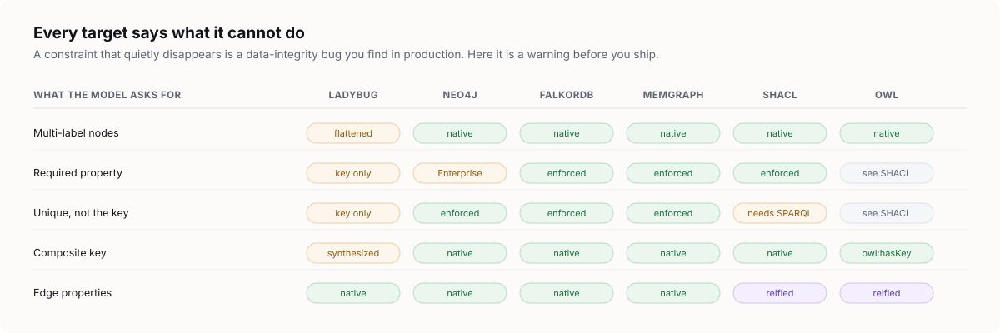
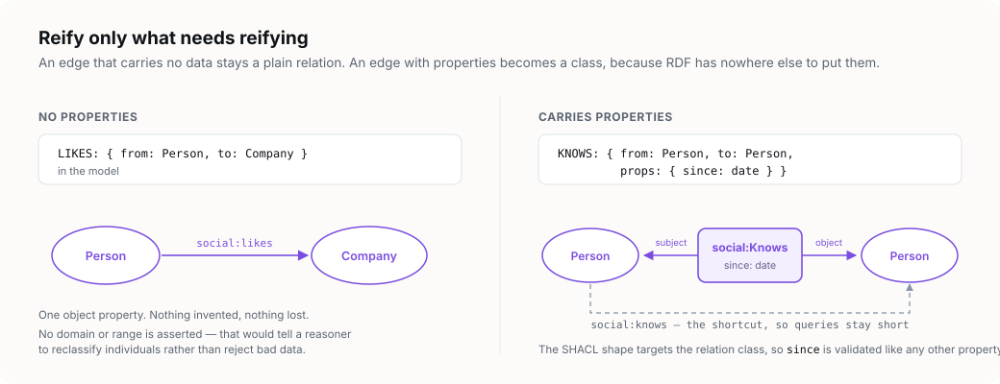

Four targets, and what each one refuses to promise
Every generator publishes a typed capability set. The compiler works out what your model requires, compares the two, and reports every gap — as an editor diagnostic and as a comment at the lossy site in the artifact.

required constraint that quietly vanishes is a data-integrity bug that surfaces in production, long after the model stopped being read.ladybug
LadybugDB — formerly Kuzu — is an embedded Cypher property graph database with a mandatory
closed schema: CREATE NODE TABLE and CREATE REL TABLE, typed
columns, a required primary key, and declared endpoint pairs. Output extension:
.cypher.
How the hierarchy lands
An abstract hierarchy is flattened to one node table per concrete leaf type, with inherited columns copied down. The abstract type itself gets no table. The cost is that an edge declared on an abstract endpoint expands to a cross-product of endpoint pairs, and adding a subtype becomes a schema migration.
What it will not enforce
Measured against LadybugDB 0.19.1, the engine enforces less than the flattening suggests:
NOT NULLis not accepted by the parser, and a null non-key value inserts successfully — so a required property that is not the key is unenforceable, and is reported as a downgrade.- A composite
PRIMARY KEYdoes not parse either, so a composite key is emitted as a synthesized concatenated column. - Only primary key uniqueness and primary key presence are actually enforced.
These are measured, not assumed. The Ladybug generator executes its own
output against an in-process LadybugDB instance and then asserts that the declared
constraints really do reject invalid data. That is how the -- versus
// comment syntax was discovered: the SQL-style form is rejected by the parser,
which a golden file alone would never have caught.
neo4j
Neo4j is schema-optional: there is no table DDL, only constraints and indexes. Multi-label
nodes are native, so an abstract hierarchy flattens to labels rather than to separate
tables — a Person node carries :Person :Party. Output extension:
.cypher.
Edition awareness
Existence and node key constraints require Enterprise. Under a Community configuration they are reported as downgrades and emitted as comments rather than silently dropped — a node key becomes a plain uniqueness constraint, which does not enforce that the key is present.
// Setting: lpg.targets.neo4j.edition
// DOWNGRADE: NODE KEY requires Enterprise.
// Uniqueness only; presence unenforced.
CREATE CONSTRAINT person_key_unique IF NOT EXISTS
FOR (n:Person) REQUIRE (n.id) IS UNIQUE;Set the editions setting to enterprise, or pass --edition enterprise to the CLI, and the real constraints are emitted instead.
shacl
SHACL is the primary constraint artifact for RDF, because it is closed-world validation and
so means what a property graph schema means. Required, unique, cardinality and datatype all
translate faithfully, and a generated shape genuinely rejects invalid data. Output
extension: .ttl.
The one gap: uniqueness across all instances needs a SPARQL-based constraint, which core SHACL cannot express. It is reported as a downgrade with a comment on the affected property shape.
owl
The ontology is emitted alongside SHACL, not instead of it, because a property graph schema
and an OWL ontology do not mean the same thing. A schema is a closed-world constraint; OWL
is open-world inference. Output extension: .ttl.
The safe assertional subset
Only classes, subClassOf, hasKey, disjointness and inverse
properties are emitted. Domain, range and cardinality restrictions are deliberately omitted.
Why omitting them is the careful choice. Emitting
rdfs:domain for an edge type does not constrain anything — it instructs a
reasoner that anything carrying that relation belongs to the domain class, silently
reclassifying unrelated individuals. Mapping constraints naively into OWL does not lose
information so much as invert its meaning. The constraints live in the SHACL artifact, and
every omission here is reported with a diagnostic pointing at it.
Gradual reification
An edge with no properties becomes a plain object property. An edge that carries properties becomes an n-ary relation class plus a shortcut property, and its SHACL shape targets that class.

Targets that are deliberately absent
Cypher compatibility is a marketing category rather than a dialect: Ladybug, Neo4j, Memgraph and Apache AGE disagree on nearly everything schema-related, so a generic Cypher generator would have no reference implementation to test against. Only targets verifiable against a real engine ship as first-class code.
For a dialect that cannot be tested here, the intended path is a template fed by the resolved model rather than a hand-written generator — so an additional target is a piece of configuration rather than a feature request. That, along with migrations and the lockfile diff, is not in this release.
Adding a target
Generators sit behind an internal registry: a target is one file plus one entry. The public plugin API is deliberately deferred until three real generators have shown where the seam actually falls — the capability set on this page is what that API will eventually expose.
interface Capabilities {
target: string
multiLabel: boolean
inheritance: 'leaf-tables' | 'labels' | 'subclass'
requiredConstraint: 'enforced' | 'key-only' | 'edition-dependent' | 'unsupported'
uniqueConstraint: 'enforced' | 'key-only' | 'edition-dependent' | 'unsupported'
compositeKey: 'native' | 'synthesized' | 'unsupported'
edgeProps: 'native' | 'reified'
nestedEdges: boolean
}